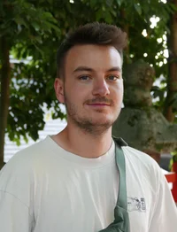

SPARC: Reliable Spatial Annotations from Robot Demonstrations at Scale
Turning robot demonstrations into reliable spatial supervision, with explicit control over annotation quality at scale.
Best Paper Award @ Lab2Production Workshop RSS 2026

PhD Researcher @ IRL-KIT
I’m a PhD researcher at KIT’s Intuitive Robots Lab, advised by Rudolf Lioutikov.
My research focuses on foundation models for robotics, spatial grounding, and learning from robot demonstrations. I study how vision-language models can annotate and curate robot datasets and provide supervision for robot learning.
I received my master’s degree in Computer Science from KIT. During my studies, I interned at SAP SE and IONOS.
Turning robot demonstrations into reliable spatial supervision, with explicit control over annotation quality at scale.
Best Paper Award @ Lab2Production Workshop RSS 2026
Sparse, task-relevant scene graphs make robot policies interpretable and more robust to visual distractors.
Compact B-spline action tokens enable fast parallel decoding and smooth robot trajectories, without separate tokenizer training.
Automatically segmenting and labeling over 115,000 trajectories from 430+ hours of robot demonstrations with pretrained foundation models.
{kind=link}
{kind=link}
{kind=link}